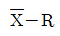
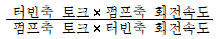
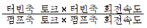
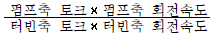
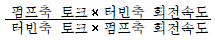

자동차정비기능장 (2006-07-16 기출문제)
1과목: 임의구분
1. 제동마력이 125PS, 기계효율 = 0.85일 때 도시마력은 몇 PS인가?
- 126
- 137
- 142
- 147
(정답률: 40%)

2. 기관의 피스톤 행정이 300mm이고 피스톤의 평균속도가 5m/s일 때 이 기관의 회전수는 몇 rpm인가?
- 500
- 1000
- 1500
- 2000
(정답률: 40%)
3. 압축비가 9 : 1인 오토사이클 기관의 열효율은 몇 %인가?(단, k = 1.4이다)
- 35
- 45
- 58
- 66
(정답률: 50%)
4. 가솔린 기관의 전자제어 연료 분사장치에서 인젝터의 연료 분사량은 무엇에 의해 결정되는 가?
- 인젝터의 솔레노이드 밸브에 가해지는 전압에 따라
- 인젝터의 솔레노이드 코일에 흐르는 통전 시간에 따라
- 인젝터에 작용하는 연료 압력에 따라
- 인젝터의 니들 밸브 행정에 따라
(정답률: 96%)
5. 실린더 내경이 78mm, 행정이 80mm인 4행정 사이클 4실린더 엔진의 회전수가 2300rpm이다. 이때 체적효율이 82.4%이면 1분동안 실제로 흡입된 공기량은 얼마인가?
- 1084cc
- 1196cc
- 1248ℓ
- 1375ℓ
(정답률: 48%)
6. 현재까지의 공해방지 장치를 열거한 것 중 틀린것은?
- 촉매 변환장치
- 배기가스 재 순환장치
- 2차 공기 공급장치
- 쉴리렌 배기장치
(정답률: 87%)
7. 가솔린연료의 옥탄가를 나타낸 것은?
- 이소옥탄 ÷ (이소옥탄 + 노멀헵탄)
- 노멀헵탄 ÷ (이소옥탄 + 노멀헵탄)
- 이소옥탄 ÷ (세탄 + α메틸나프탈린)
- 세탄 ÷ (세탄 + α메틸나프탈린)
(정답률: 80%)
8. 디젤 분사노즐 시험에 관한 설명으로 틀린 것은?
- 분무되는 연료에 손을 대지 않도록 한다.
- 시험연료는 가능한 한 20℃ 전후로 유지한다.
- 시험 중에는 인화 물질이 없도록 한다.
- 시험기의 핸들 작동은 가능한 한 천천히 한다.
(정답률: 84%)
9. 밸브 스프링의 서징 현상을 방지하는 방법 중 틀린 것은?
- 피치가 작은 스프링을 사용한다.
- 부등피치 스프링을 사용한다.
- 원추형 스프링을 사용한다.
- 피치가 서로 다른 2중 스프링을 사용한다.
(정답률: 80%)
10. 다음 중 LPG 차량의 봄베에 부착된 충진 밸브와 안전밸브의 작동에 대한 설명이다. 틀린 것은?
- 충진 밸브는 충진시 사용하는 밸브로 내부에 안전밸브와 일체로 되어 있다.
- 안전밸브는 봄베 주변 온도 상승으로 인하여 내압이 24kgf/cm2 이상이 되면 열려 외부로 방출시킨다.
- 안전밸브는 내압이 높아져 열렸다가 내압이 16kgf/cm2 이하로 떨어지면 닫힌다.
- 안전밸브는 충진시 뜨개가 일정 이상으로 높아지면 연료 유입을 차단하는 밸브이다.
(정답률: 66%)
11. 산소 센서의 고장시 나타나는 결과가 아닌 것은?
- 가속력 출력이 부족하다.
- 규정 이상의 CO 및 HC가 발생한다.
- 연료소비율이 일정하다.
- ECU에 고장 코드가 저장된다.
(정답률: 82%)
12. 전자제어 가솔린 연료 분사방식의 인젝터에서 연료 분사압력을 항상 일정하게 유지시키기 위한 장치는?
- 릴리프 밸브
- 체크 밸브
- 연료압력조절기
- 맥동 댐퍼
(정답률: 80%)
13. 중합 옵페핀, 부틸 중합물, 섬유에스텔 등을 윤활유에 첨가하여 온도 변화에 따른 영향을 적게 하는 첨가제는?
- 점도지수 향상제
- 유성 향상제
- 유동점 강하제
- 소포제
(정답률: 65%)
14. 플라스틱 게이지를 이용하여 크랭크축 베어링오일 간극을 측정하는 방법으로 잘못된 것은?
- 크랭크축과 베어링에 윤활유를 절대로 바르지 않는다.
- 플라스틱 게이지 조각을 크랭크 저널에 크랭크축 회전방향으로 평행하게 설치한다.
- 캡 볼트는 규정 토크로 조인 후 크랭크축은 절대 회전시키지 않는다.
- 눌려 있는 플라스틱 게이지 폭을 게이지 봉투에 표시된 눈금으로 측정한다.
(정답률: 79%)
15. 기관의 과열 원인으로 틀린 것은?
- 라디에이터 압력 캡의 스프링 장력 부족
- 라디에이터 코어 막힘
- 팬 벨트 장력 부족이나 끊어짐
- 수온 조절기가 열린 상태로 고장
(정답률: 94%)
16. 디젤 기관의 연소 과정에 속하지 않는 것은?
- 후 연소기간
- 직접 연소기간
- 초기 연소기간
- 착화 지연기간
(정답률: 53%)
17. 로터리 기관을 왕복형 기관과 비교했을 때의 특징이 아닌 것은?
- 부품수가 적다.
- 출력이 같은 왕복형 기관에 비해 대형이고 무겁다.
- 왕복운동 부분과 밸브 기구가 없으므로 진동과 소음이 적다.
- 캠에 의한 밸브기구가 없으므로 고속시 출력이 저하되는 일이 적다.
(정답률: 88%)
18. 가솔린 기관의 희박 연소(lean burn) 시스템의 정의와 연비 향상에 관한 설명으로 틀린것은?
- 이론 공연비보다 희박한 혼합기로 운전이 가능하다.
- 린 센서(lean sensor)가 갖추어져 있으면 공연비의 피드백 제어가 가능하다.
- 연소 온도가 높아 실린더 벽으로부터 열손실이 증가된다.
- 공연비의 증대로 배기손실이 감소된다.
(정답률: 75%)
19. 어떤 측정법으로 동일 시료를 무한 횟수로 측정하였을 때 데이터 분포의 평균치와 참값의 차를 무엇이라 하는가?
- 신뢰성
- 정확성
- 정밀도
- 오차
(정답률: 61%)
20. 생산 계획량을 완성하는데 필요한 인원이나 기계의 부하를 결정하여 이를 현재 인원 및 기계의 능력과 비교하여 조정하는 것은?
- 일정 계획
- 절차계획
- 공수계획
- 진도관리
(정답률: 36%)
2과목: 임의구분
21. TPH 활동의 기본을 이루는 3정 5S 활동에서 3정에 해당되는 것은?
- 정시간
- 정돈
- 정리
- 정량
(정답률: 69%)
22. PERT에서 Network에 관한 설명 중 틀린것은?
- 가장 긴 작업시간이 예상되는 공정은 주 공정이라 한다.
- 명목상의 활동(Dummy)은 점선 화살표 (⇢)로 표시한다.
- 활동(Activity)은 하나의 생산 작업요소로서 원(◯)으로 표시된다.
- Network는 일반적으로 활동과 단계의 상호 관계로 구성된다.
(정답률: 69%)
23. 공정분석 기호 중 ⃞는 무엇을 의미하는가?
- 검사
- 가공
- 정체
- 저장
(정답률: 46%)
24. 축의 완성 지름, 철사의 인장강도, 아스피린 순도와 같은 데이터를 관리하는 가장 대표적인 관리도는?

관리도- nP 관리도
- C 관리도
- U 관리도
(정답률: 53%)
25. 노스 업(nose up)이나 노스 다운(nose down)을 방지할 수 있는 쇽업소버는?
- 텔레스코핑형 단동식
- 레버형 단동식
- 텔레스코핑형 복동식
- 드가르봉식
(정답률: 72%)
26. 제동장치 베이퍼록 현상의 원인이 아닌 것은?
- 공기 브레이크의 과도한 사용
- 드럼과 라이닝의 끌림에 의한 가열
- 긴 비탈길에서 브레이크의 사용 빈도가 많은 운전
- 오일의 변질에 의한 비등점 저하
(정답률: 86%)
27. 레이디얼 타이어 호칭에서 195/60 R 14에서60은 무엇을 표시하는가?
- 타이어 폭
- 속도
- 하중지수
- 편평비
(정답률: 89%)
28. 동기 치합식(키식) 수동변속기에서 동기화란 주축상에 회전하는 단기어(shift gear)의 콘부와 (①)의 접촉 마찰에 의해 (②)와 단기어의 원주 속도가 같아져 (③)가 쉽게 치합되는 것을 말한다. 다음 ( )안에 들어갈 명칭은?
- ① 싱크로나이저링 ② 클러치 허브 ③ 클러치 슬리브
- ① 클러치 허브 ② 클러치 슬리브 ③ 싱크로나이저링
- ① 클러치 허브 ② 싱크로나이저링 ③ 클러치 슬리브
- ① 싱크로나이저링 ② 클러치 슬리브 ③클러치 허브
(정답률: 59%)
29. 유성기어장치에서 선 기어 잇수가 20, 유성기어 잇수가 10, 링 기어 잇수가 40이고 구동쪽의 회전수가 100회전을 하고 있다. 이때 선 기어를 고정하고 캐리어를 100회전 했을 때 링기어는 몇 회전하는가?
- 150회전 증속
- 150회전 감속
- 130회전 증속
- 130회전 감속
(정답률: 63%)
30. 브레이크 드럼의 지름이 500mm, 드럼에 작용하는 힘이 300kgf, 마찰계수가 0.2일 때 드럼에 작용하는 토크는?
- 45kgf-m
- 25kgf-m
- 15kgf-m
- 35kgf-m
(정답률: 42%)
31. 동력전달장치에서 종감속장치의 기능이 아닌것은?
- 회전 토크를 증가시켜 전달한다.
- 회전속도를 감소시킨다.
- 좌ㆍ우 구동륜의 회전속도를 차동 조절한다.
- 필요에 따라 동력전달 방향을 변환시킨다.
(정답률: 52%)
32. 차속 감응형 동력조향 시스템(EPS)에서 고속 주행시 조향력 제어로 맞는 것은?
- 조향력을 가볍게 한다.
- 조향력을 무겁게 한다.
- 고속 제어는 하지 않는다.
- 조향력 제어를 순간적으로 정지한다.
(정답률: 90%)
33. 자동변속기 장착 차량의 경우 인히비터 스위치가 드라이브 모드(D 위치)에 있을 때는 시동이 되지 않는데 그 이유는 무엇 때문인가?
- D 위치에서만 시동전동기 ST 단자와 회로가 연결되기 때문
- D 위치에서는 시동전동기 ST 단자와 회로가 연결되지 않기 때문
- D 위치에서는 엔진 ECU에 회로가 연결되지 않기 때문
- D 위치에서만 엔진 ECU에 회로가 연결되기 때문
(정답률: 82%)
34. ABS ECU로 입력되는 휠 스피드 센서 신호(교류파형)를 가지고 차륜 속도를 연산하는 방법이 틀린 것은?
- 주파수 측정 방식
- 주기 측정 방식
- 평균 주기 측정 방식
- 최대 주파수 측정 방식
(정답률: 73%)
35. 차량 속도가 50km/h, 차륜 속도가 40km/h일 때 슬립률은 얼마인가?
- 10%
- 20%
- 30%
- 40%
(정답률: 76%)
36. 토크 컨버터에서 전달효율을 바르게 나타낸 것은?




(정답률: 47%)
37. 자동차의 축간거리가 2.4m, 바깥쪽 바퀴의 조향각이 30°, 안쪽 바퀴의 조향각이 33°일 때 최소회전반경은?(단, 바퀴의 접지면 중심과 킹핀 중심과의 거리는 15cm)
- 4.95m
- 6.30m
- 6.80m
- 7.30m
(정답률: 46%)
38. 토인 측정시 먼저 검검하여야 할 것에 들지 않는 것은?
- 타이어 공기압
- 허브 베어링 유격
- 볼 조인트 마모 및 현가장치의 절손상태 유무
- 차량의 무게
(정답률: 92%)
39. 자동차의 검사기준 및 방법에서원동기의 검사 기준을 나타낸 것들이다. 원동기의 검사기준으로 적합하지 않은 것은?
- 팬 벨트 및 방열기 등 냉각계통의 손상이 없고 냉각수의 누출이 없을 것.
- 점화, 충전, 시동장치의 작동에 이상이 없을 것.
- 시동상태에서 심한 진동 및 이상음이 없으며, 윤활유 계통에서 윤활유의 누출이 없을 것.
- 배기 매니폴드의 장착과 촉매컨버터의 작동이 확실할 것.
(정답률: 79%)
40. 다음 중 안티 롤(Anti-Roll) 제어할 때 가장 중요한 센서는?
- 차고 센서
- 홀 센서
- 압력 센서
- 조향각 센서
(정답률: 55%)
3과목: 임의구분
41. 압축 공기식 브레이크 장착 차량에서 제동시 차량이 한쪽으로 쏠림 현상이 발생했다. 그 원인이 아닌 것은?
- 압축 공기 압력이 최대 압력에 도달하지 못함
- 규격이 다른 브레이크 실린더 장착
- 불균일한 타이어 마모
- 브레이크 라이닝의 불균일한 마모
(정답률: 78%)
42. 공기 배력 브레이크의 작동 부품이 아닌 것은?
- 에어 서보
- 공기 탱크
- 압축기
- 응축기
(정답률: 89%)
43. 자동차가 선회시 정상 선회 반경보다 점점 선회 반경이 커지고 있다. 무엇을 점검하여야 하는가?
- 뉴트럴 스티어링 여부
- 20° 선회시 토아웃
- 언더 스티어링 여부
- 오버 스티어링 여부
(정답률: 81%)
44. 총배기량은 1500cc이고 회전저항이 6kgf-m인 기관의 플라이 휠 링 기어 잇수가 120이다. 기동 전동기 피니언 잇수가 12이면 필요로 하는 최소 회전력은 몇 kgf-m인가?
- 0.6
- 1.0
- 3.47
- 25
(정답률: 50%)
45. 축전지의 수명을 단축하는 요인이 아닌 것은?
- 순수한 증류수 보충
- 과충전에 의한 온도상승
- 전해액 부족
- 기계적 외부진동
(정답률: 90%)
46. 100AH 축전지의 일일 자기 방전량이 1%일 때 이것을 보존하기 위한 충전전류는 몇 A로 조정해주면 되는가?
- 0.01A
- 0.04A
- 0.5A
- 1A
(정답률: 52%)
47. 자동차 냉방장치에서 저ㆍ고압측 압력이 정상치 보다 높을 때의 결함 원인으로 거리가 먼 것은?
- 냉매 과충진
- 응축기 팬 작동 안됨
- 응축기 핀 막힘
- 팽창밸브 막힘
(정답률: 56%)
48. 자동차의 전조등을 교환 정비 후 전조등 시험기로 광도 및 광축을 측정하려고 한다. 측정이 잘못된 사항은?
- 타이어 공기압을 규정에 맞도록 조정한 후 측정한다.
- 자동차는 최대 적재상태에서 측정하고 규정에 맞도록 조정한다.
- 시동을 걸어 축전지는 충전이 된 상태에서 측정한다.
- 4등식인 경우 측정하지 않는 등화는 빛을 차단한 후 측정한다.
(정답률: 88%)
49. 무 배전기 점화장치(DLI)에 관한 내용 중 틀린 것은?
- 엔진 회전수 및 부하에 맞추어 적절한 점화시기를 얻기 위하여 전자 제어장치로 사용한다.
- 고압 코드의 저항에 기인하는 실화 발생률이 높다.
- 각 기통 또는 2개 기통마다 점화 코일을 설치한다.
- 배전기 내의 배전에 의한 전파 장애 발생이 적다.
(정답률: 87%)
50. 12V-45AH의 배터리에 24W 전구 2개를 직렬로 접속 후 작동시켰을 경우 회로 내에 흐르는 전류는 몇 A인가?
- 0.5
- 1
- 1.5
- 2
(정답률: 43%)
51. 자동차에서 에어백 시스템의 구성부품이 아닌것은?
- 클럭 스프링(Clock Spring 또는 Control Coil)
- 에어백 컨트롤 유닛
- 사이드 충격 감지 센서
- 차량 속도 센서
(정답률: 70%)
52. 일반적으로 자동 정속 주행장치라 불리는 전자 순항 제어장치의 3가지 작동 모드가 아닌 것은?
- 순항 모드
- 제동 모드
- 감속 모드
- 가속 모드
(정답률: 66%)
53. 연마를 할 때 사용하지 않는 안전 보호구는?
- 장갑
- 보안경
- 방독 마스크
- 방진 마스크
(정답률: 96%)
54. 도장 작업 후 열처리시에 부스의 온도를 급격하게 올렸을 때 나타날 수 있는 도장의 결함은?
- 오렌지 필
- 주름 현상
- 핀홀 또는 솔벤트 퍼핑
- 백화 현상
(정답률: 67%)
55. 중도 도료(surfacer)의 기능으로 부적당한 것은?
- 도막과 도막 층간의 부착성 향상
- 도면의 최종적인 요철(흠집)제거
- 상도 도료의 용제 하도 침투방지
- 건조 촉진 및 부식의 기능향상
(정답률: 59%)
56. 강판이 외력을 받았을 때 응력이 집중되는 부분이 아닌 것은?
- 2중 강판 부분
- 구멍이 있는 부분
- 단면적이 작은 부분
- 곡면이 있는 부분
(정답률: 84%)
57. 자동차 도장의 조색 및 색상과 관련된 설명으로 틀린 것은?
- 보라색은 빨간색과 파란색의 혼합 색상이다.
- 색의 기본색은 빨간색, 파란색, 노란색이다.
- 보색끼리 섞으면 검정색이 된다.
- 흰색은 빛을 모두 반사하여 생긴 색이다.
(정답률: 60%)
58. 모노코크 보디는 프레스 가공에 의한 대량 생산이 가능한데 다음 중 보디 제작에 사용되는 프레스 가공법이 아닌 것은?
- 업세팅(up setting)
- 플랜징
- 비딩
- 헤밍
(정답률: 73%)
59. 전기 용접봉의 표시기호에서 E43◯Δ중 43이 표시하는 것은?
- 사용 전류
- 피복제 종류
- 융착 금속의 최저 인장강도
- 용접 자세
(정답률: 70%)
60. 자동차 보디 패널의 오목면과 골이 파여진 좁은 곳에 사용하는 샌더는?
- 벨트 샌더
- 디스크 샌더
- 오비털 샌더
- 스트레이트 샌더
(정답률: 60%)
도시마력 = 125 x 0.85
도시마력 = 106.25
따라서, 가장 가까운 정수인 147이 정답이 됩니다.